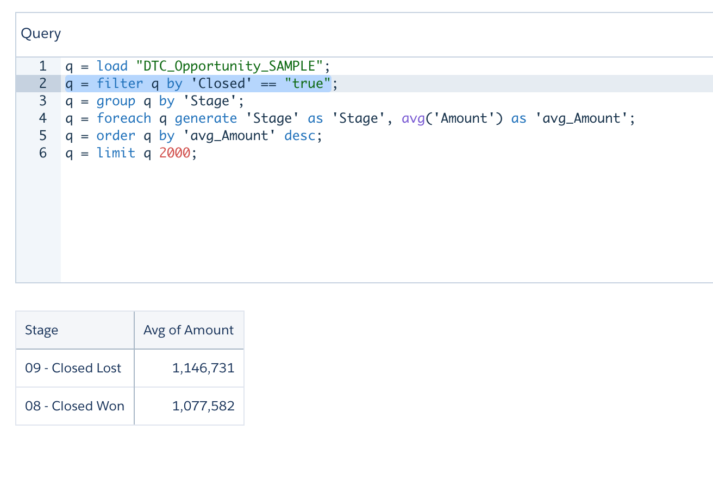
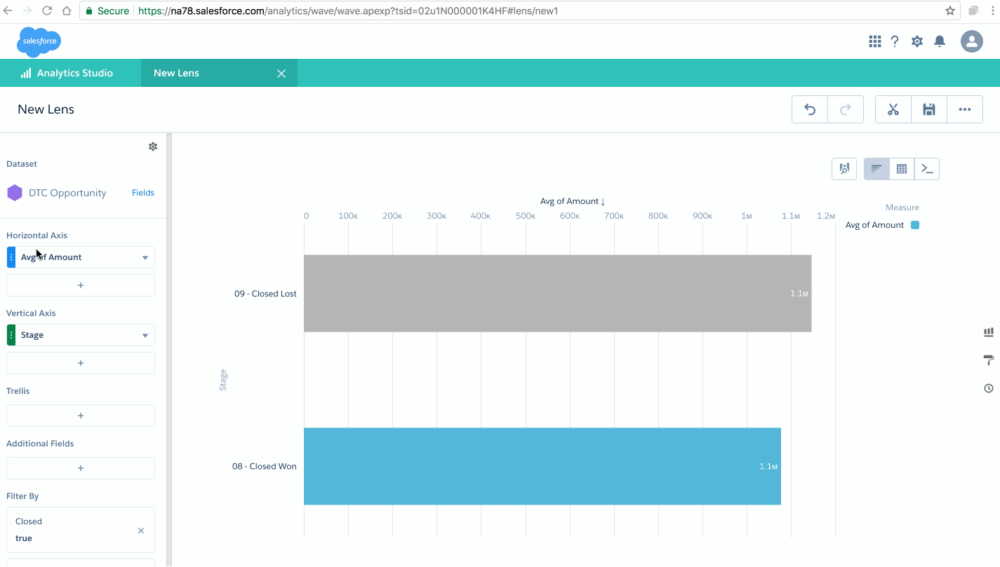
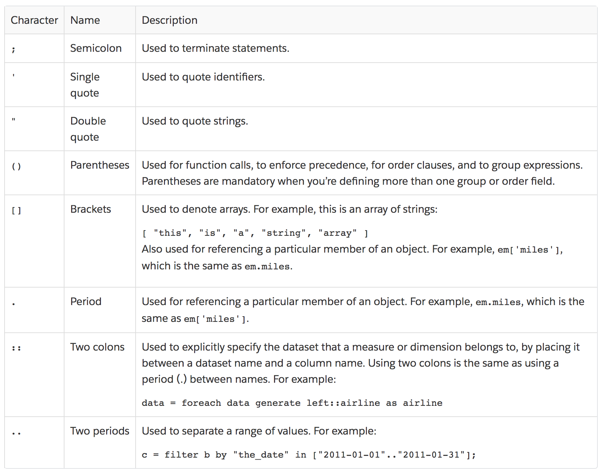
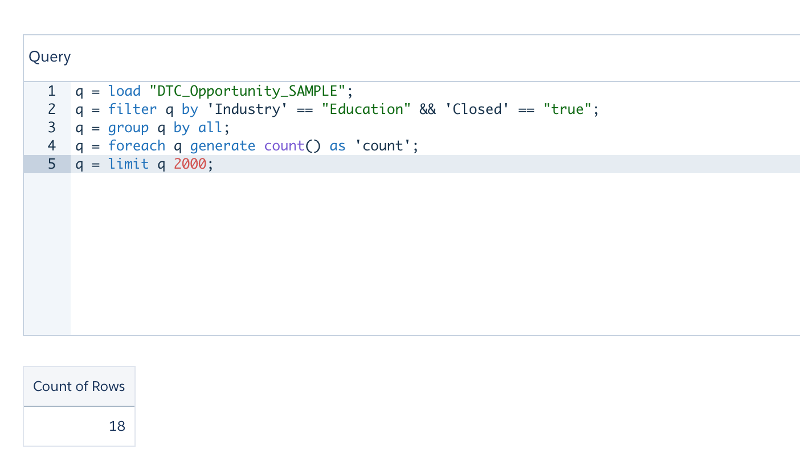
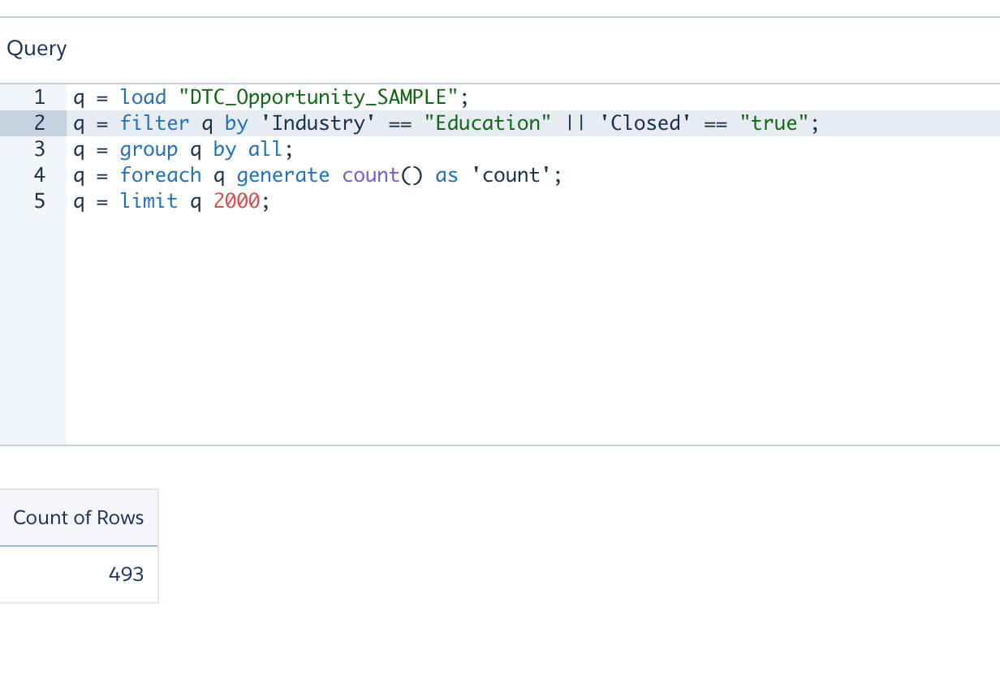
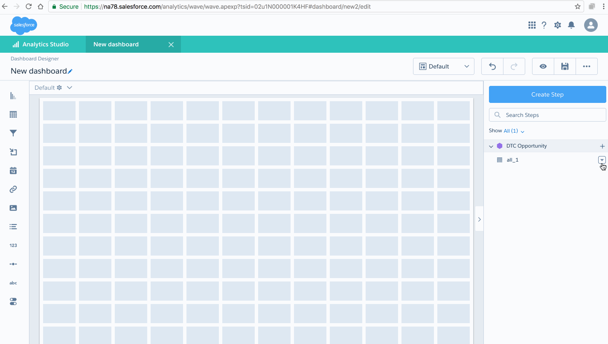
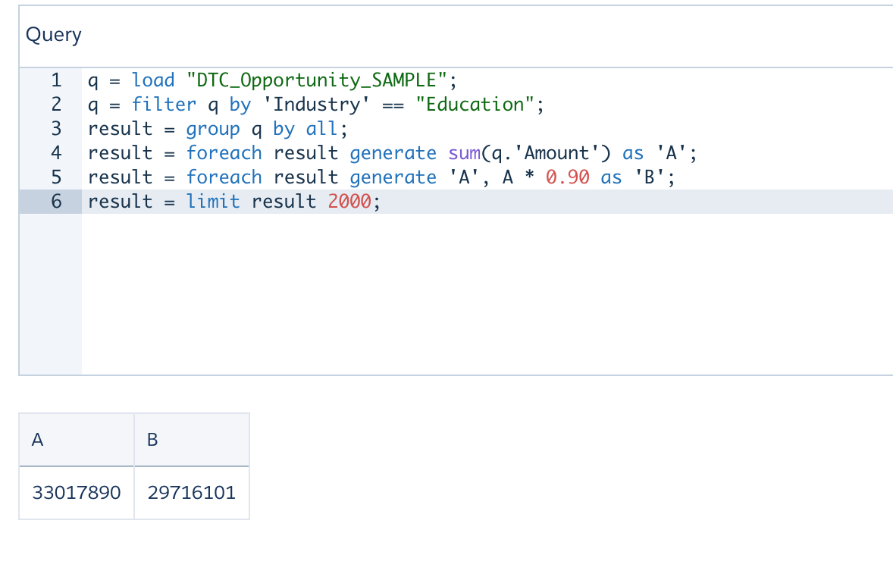
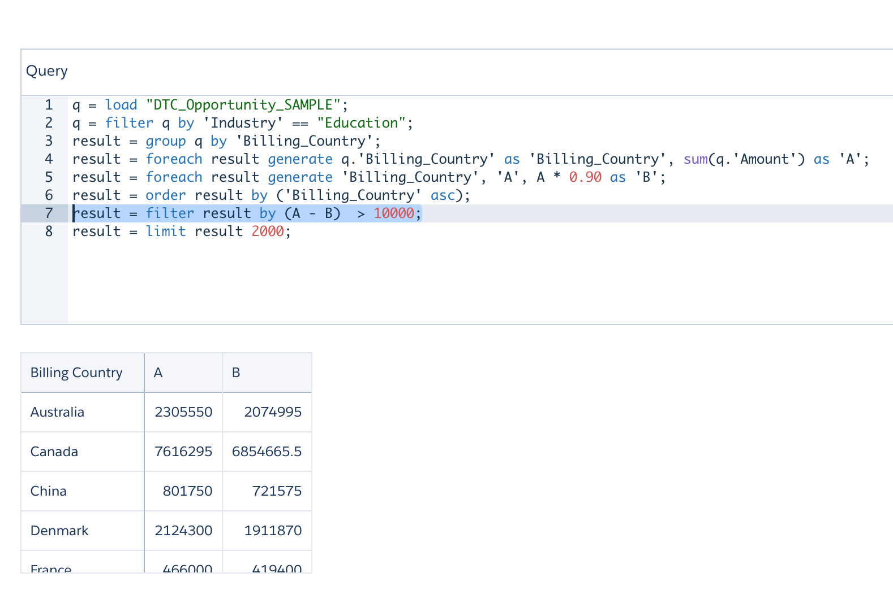
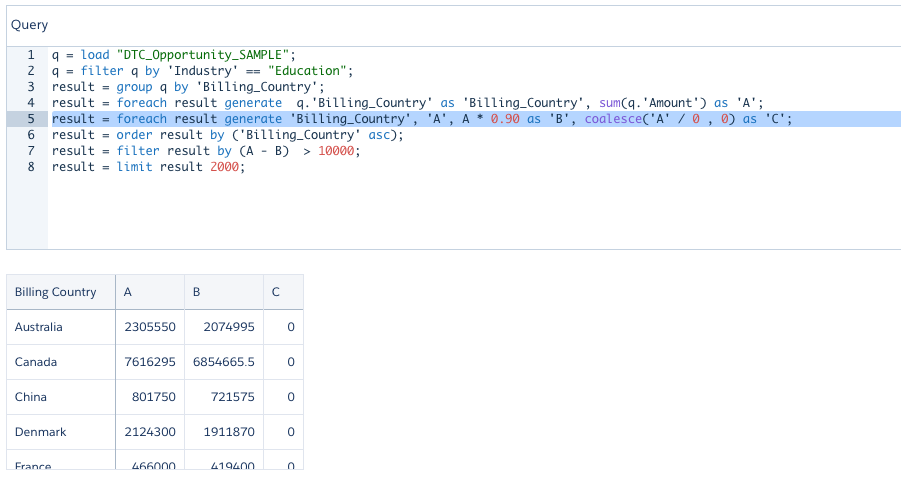

{{appName}}
- Salesforce Analytics Query Language (SAQL) used to access data in Analytics Cloud datasets
- Used in lenses, dashboards, and explorer to gather data for visualizations.
Video: SAQL Basics
Enable SAQL Logs in the Chrome Browser

Expression Involving Booleans
- 
- Note: "true" value for the boolean
Effects of Editing SQL in a Lens
- 
- Note: Editing the SAQL results :
Filters cannot be visually displayed because of the advanced editing in SAQL
Special Characters
- 
Best Practices
- After loading the dataset:
result = load dataset;apply filter to the dataset you will be working down the line, this way, we will be dealing with filtered records :result = filter rows by predicate; - Example:
q = load "DTC_Opportunity_SAMPLE"; q = filter q by 'Closed' == "true"; - Filter before the projection and filter after projection (post-projection filter)
Pre-projection filters - AND and OR


Editing a Column - adding Calculated Column
Editing a Column - adding Calculated Column - contd.
Video: SAQL Advanced Filters
Post-projection filters

coalesce

Video: SAQL Coalesce
Union
- Combines multiple result sets into one result set.
-
q = load "opportunity"; q = group q by ('Account.AccountSource', 'Account.BillingCountry'); q = foreach q generate 'Account.AccountSource' as 'Account.AccountSource', 'Account.BillingCountry' as 'Account.BillingCountry', sum('Amount') as 'sum_Amount'; q = order q by ('Account.AccountSource' asc, 'Account.BillingCountry' asc); r = load "opportunity"; r = group r by ( 'Account.BillingCountry'); r = foreach r generate "Total" as 'Account.AccountSource','Account.BillingCountry', sum('Amount') as 'sum_Amount'; -- union q and r s = union q,r; s = group s by ('Account.AccountSource' , 'Account.BillingCountry' ); s = foreach s generate 'Account.AccountSource','Account.BillingCountry',sum('sum_Amount') as 'sum_Amount'
Video: SAQL Union
CoGroup
-
Cogrouping means that two input streams,
called left and right are grouped independently and arranged side by side
. Only data that exists in both groups appears in the results.
Example:z = cogroup x by (day,origin), y by (day,airport); -- You can’t have the same stream on both sides of a cogroup operation. -- To perform a cogroup operation on one dataset, -- load the same dataset twice so you have two streams. a = load "opportunity"; b = load "opportunity"; b = cogroup a by ClosedDate, b by CreatedDate; c = foreach b generate sum(a.Amount) as Amount
Video: SAQL cogroup
Create Calculated Columns Using the Compare Table
- Use the Compare Table to define : custom formulas with columns of data. View measures side by side, and perform math across the table’s columns and rows.
Windowing Functions
- To calculate common business cases such as:
- percent of grand total
- moving average
- year and quarter growth
- ranking
- Allows to calculate data for a single group using aggregated data from adjacent groups
- Aggregates across groups rather than within groups and accepts any valid numerical projection on which to aggregate.
- Windowing functionality is enabled only for grouped queries
q = load "dataset";
q = group q by (OrderDate_Year, OrderDate_Quarter);
q = foreach q generate OrderDate_Year as Year, OrderDate_Quarter as Quarter,
sum(Sales) as sum_amt,
sum(sum(Sales)) over([.. 0] partition by all order by (OrderDate_Year, OrderDate_Quarter)) as r_sum;
Windowing Functions - Contd.
- Aggregate functions that supports windowing:
- avg, sum, min, max, count, median
- percentile_disc, and percentile_cont
- Ranking Function: Returns a rank value for each row in a partition. Rank functions supported:
-
- rank(): Assigns rank based on order. Repeats rank when the value is the same, and skips as many on the next non-match.
- dense_rank(): Same as rank() but doesn’t skip values on previous repetitions.
- cume_dist(): Calculates the cumulative distribution (relative position) of the data in the reset group.
- row_number(): Assigns a number incremented by 1 for every row in the reset group.
-